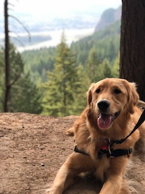

<!DOCTYPE html>
<html>
</html>
<head>
  <link href="css/bootstrap.css" rel="stylesheet" type="text/css">
  <link href="css/styles.css" rel="stylesheet type="text/css" media="all">
  <title>Lizzie's Portfolio</title>
</head>
<body>
<h2>My Favorite Things</h2>
<div>
  
  <p>Exploring the Gorge and going on as many hikes as possible with my pup. Some of my favorites are:</p>
  <ol>
    <li>Hamilton Mountain</li>
    <li>Dog Mountain</li>
    <li>Angels Rest</li>
    <li>Horsetail Falls</li>
  </ol>
</div>
<div>
  
  <p>I have a huge list of breweries that I'd like to go to. Over the years, my friends and I have tried about 40. Some breweries that I always return to are:</p>
  <ol>
    <li>Montavilla Brew Works</li>
    <li>Culmination</li>
    <li>Back Pedal</li>
    <li>Threshold</li>
    <li>Gigantic</li>
  </ol>
</div>
<div>
  
  <p>I'm obsessed with my dog, Lucy. She's the most moddy dog I've ever met. To keep myself from getting bored on the many walks we take together, I listen to podcasts. Some of my favorite ones are:</p>
  <ol>
    <li>Casefile</li>
    <li>Harry Potter and the Sacred Text</li>
    <li>Modern Love</li>
  </ol>
</div>
</body>
